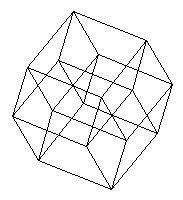
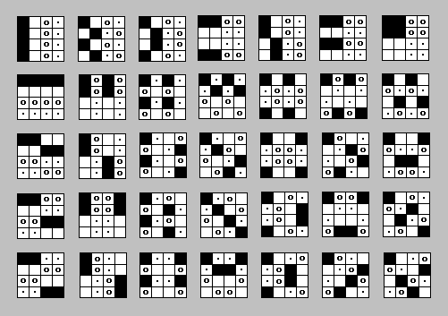
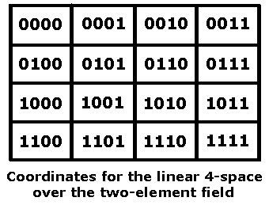
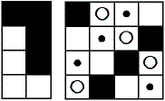
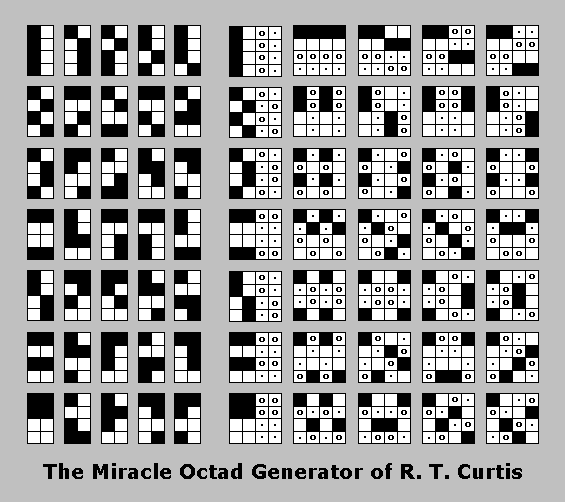
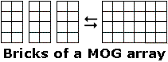
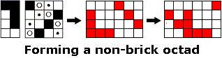
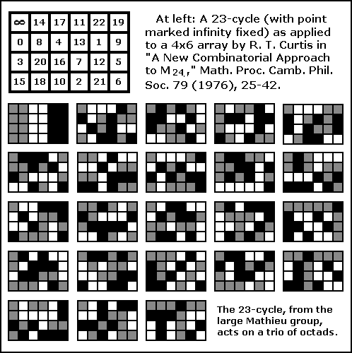

| Finite Geometry
Notes
|
Geometry of the 4x4 Square
Notes by Steven H. Cullinane
A Structure-Endowed Entity
"A guiding principle in modern mathematics is this lesson: Whenever you have to do with a structure-endowed entity S, try to determine its group of automorphisms, the group of those element-wise transformations which leave all structural relations undisturbed. You can expect to gain a deep insight into the constitution of S in this way."
-- Hermann Weyl in Symmetry
Let us apply Weyl's lesson to the following "structure-endowed entity."
What is the order of the resulting group of automorphisms?
First, of course, we must determine exactly what "structural relations" we wish to leave undisturbed.
Trivially, the overall 4x4 structure is left undistubed by any permutation of the sixteen dots. But not all substructures are left undistubed by an arbitrary permutation. For example, the set of four rows and the set of four columns are left undisturbed by permutations of rows and/or columns, but not by permutations of the four 2x2 quadrants.
We may be interested in permutations that preserve the structural relation of adjacency. In this case, it turns out that the group of symmetries of the four-dimensional hypercube, or tesseract,

is what we are looking for, since it is well-known that adjacency in the hypercube is equivalent to adjacency in a 4x4 array-- provided we regard the array as drawn on a torus, so that each element of the array is adjacent to four other elements. The hypercube's symmetry group is of order 384.
We may, however, be interested in structural relations other than adjacency. For instance, we may be interested in families of subsets of the sixteen dots.
One such family, the 6-sets of the (166, 166) Kummer configuration, was discussed (without naming it as such) by R.D. Carmichael in 1937. For that configuration, see this website's note on Configurations and Squares. Carmichael's 1937 classic, Introduction to the Theory of Groups of Finite Order, seems, however, to have overlooked an even more interesting family of subsets.
It turns out that if we regard the
4x4 array as a picture of the affine space of four dimensions over the
two-element field, a very natural family of subsets is provided by the
35 partitions of the space into four parallel affine planes

Aficionados of T. S. Eliot may, if they
like,
call the
four-element planes or cosets "quartets."
For a description of how the 4x4 array can be coordinatized to yield this family of partitions and also a group of 322,560 permutations (rather than the measly 384 of the hypercube) that leave affine "structural relations" undisturbed, see Finite Relativity.

Strangely enough, this rather obvious geometric picture
The Curtis MOG is a pairing of 35 partitions of a 4x4 array into four-sets (which turn out, once the array has been suitably coordinatized as a linear space, to be the cosets, under translation, of the 35 two-dimensional linear subspaces) with the 35 partitions of an eight-set (shown as an array of four rows and two columns) into two four-sets. This pairing is not arbitrary; it is preserved under the action of the 244,823,040 permutations of the large Mathieu group M24 acting on an array of four rows and six columns. See published descriptions* of the MOG for details.
Within one of the maximal subgroups (a "brick stabilizer") of M24, each of the 322,560 affine transformations of the 4x4 array is accompanied by a related M24 action (the identity, if the affine transformation is a translation) on an associated 4x2 array, or "brick," of the MOG. These group actions illustrate the well-known isomorphism (pdf) of the alternating group on eight elements, A8, with the general linear group, GL(4,2), on the four-space over the two-element field.

One of the 35 pairs in the Curtis MOG
For a description of one way to
construct the MOG,
see
Generating
the
Octad Generator,
from which
the following illustration is drawn.

|
The quintuply transitive Mathieu group M24
is the
automorphism group
of the set of octads, or 8-sets, generated by
the Curtis Miracle Octad
Generator (MOG). (See Peter J. Cameron's Geometry
of the Mathieu Groups (pdf).)  Each brick, considered by itself, is an octad. Hence the "I" value of 3, for the 3 individual bricks. A non-brick octad is formed by selecting 4 similarly marked locations (all black or all white) within one of the 35 4x2 MOG pictures, and 4 similarly marked locations (all black, all white, all circles, or all dots) in the corresponding 4x4 MOG picture, then applying a permutation (possibly the identity) of the three bricks of the resulting 4x6 array.Apart from the octads that are themselves bricks, the 8 cells that define an octad may occur in a 4 + 4 + 0 (or 4 + 0 + 4 or 0 + 4 + 4) pattern within the three bricks. or they may occur in a 4 + 2 + 2 (or 2 + 4 + 2 or 2 + 2 + 4) pattern within the three bricks. In the 4 + 4 + 0, etc., case, one of the two nonempty bricks in a 4x6 array contains 4 cells (either the four white or the four black cells) from one of the 7 bricks pictured in the leftmost column of the MOG picture, which can be chosen in 2 ways (hence "A" and "B"), and the other nonempty brick contains 4 cells (any 4 cells marked alike) from the corresponding picture in column 6 of the MOG; these 4 cells can fall within this nonempty brick in exactly 2 ways (hence "C"). Switching the two nonempty bricks adds no new octads. The third, empty, brick can fall in any of the three brick positions (hence "D"). In the 4 + 2 + 2, etc., case, one of the 3 bricks, the "heavy" brick, contains 4 elements of the octad. This can fall within any of the three brick positions (hence "H"). There are clearly 28 * 2 choices (from the MOG pictures in columns 2 through 5) for the 4 elements of the heavy brick (hence "E" and "F"). Paired with each of these choices are 4 ways of selecting the "2 + 2" elements in the other two bricks, based on the sets of 4 like elements in each of the MOG pictures in columns 7 through 10 (hence "G"). Switching the two "2 + 2" bricks adds no new octads. |
The illustration below shows the action
of a 23-cycle
from M24 on a "trio" of octads.

The Curtis MOG plays a prominent role in the book Twelve Sporadic Groups, by Robert L. Griess, which discusses some of the groups involved in Griess's Monster.** A picture of a MOG action appears on the book's cover. For some other connections between the MOG and the Monster, see the October 2004 paper Cross Orbits (pdf), by Peter Rowley.
For a description of how the 4x4 array also provides a nice picture of the 35 lines in the finite projective space PG(3,2) (as well as the 35 planes through a point in the finite affine space AG(4,2)), see Orthogonal Latin Squares as Skew Lines.
In fact, the MOG has an ancestor in the literature of finite projective geometry. A pairing equivalent to that in the MOG was described (though without the rectangular arrays devised by Curtis) in a paper on the projective space PG(3,2) published in 1910. See page 72 of G. M. Conwell's "The 3-Space PG(3,2) and Its Group," Ann. of Math. 11 (1910), 60-76.
The relevant result is as follows:
"There exists a bijective correspondence between the 35 lines of PG(3,2) and the 35 unordered triples in a 7-set such that lines are concurrent if and only if the corresponding triples have exactly one element in common."
-- Elisabeth Kuijken, Thesis (ps), March 2003.
Kuijken cites Conwell as the source of this result. The result may be verified by examining the MOG illustration above in light of the note Orthogonal Latin Squares as Skew Lines.
For another approach to constructing the MOG that involves the symplectic generalized quadrangle known as W(2), see Picturing the Smallest Projective 3-space.
For a theorem illustrating a nice interplay between affine and projective substructures of the 4x4 array, see Map Systems.
It is conceivable that the decomposition strategy sketched in the "Map Systems" note might have some valuable generalizations.
The affine group in the 4x4 space can be generated by permuting rows, columns, and quadrants. For an illustration, see the Diamond 16 Puzzle. For a proof, see Binary Coordinate Systems. For some background, see Diamond Theory and Galois Geometry.
As noted above, the 4x4
square model
lets us visualize the projective space PG(3,2) as well as the affine
space
AG(4,2). For
tetrahedral and pentagonal
(pdf) models of PG(3,2), see the work of
Burkard
Polster.
The following is from an advertisement of a talk by Polster on PG(3,2).
|
The Smallest Perfect Universe "After a short introduction to finite geometries, I'll take you on a... guided tour of the smallest perfect universe -- a complex universe of breathtaking abstract beauty, consisting of only 15 points, 35 lines and 15 planes -- a space whose overall design incorporates and improves many of the standard features of the three-dimensional Euclidean space we live in.... Among mathematicians our perfect universe is known as -- Burkard Polster, May 2001 See also my commentary on a paper by Polster. |
Note on Required Background
"There is no royal road to geometry."
-- Saying attributed to Euclid
The reader is not expected to fully understand the above material unless he or she has had undergraduate instruction in linear algebra, abstract algebra, and modern geometry. The following references may, however, be helpful:
Contemporary Abstract Algebra, by Joseph A. Gallian
Geometry and Symmetry, by Paul B. Yale
Groups and Symmetry, by Phill Schultz.
See especially Part 19,
Linear
Groups Over Other Fields.
As Schultz demonstrates, the order of the affine group in the four-dimensional space over the two-element field is(24)(24 - 1)(24 - 21)(24 - 22)(24 - 23) =
(16)(16 - 1)(16 - 2)(16 - 4)(16 - 8) =
(16)(15)(14)(12)(8) = 322,560.
Classical Groups, by Peter J. Cameron
Projective and Polar Spaces, by Peter J. Cameron
Finite Geometries (ps), by Juergen Bierbrauer
An Introduction to Finite Geometry (ps), by Simeon Ball
Finite Geometry (pdf), by Chris Godsil
Finite Geometry Web, resource listings by Alan Offer
Some Sporadic Geometries Related to PG(3,2) (jpg), by Arnold Neumaier
Sporadic Simple Groups (ps), by Simon Nickerson
* "A New Combinatorial Approach to M24," by R. T. Curtis, Math. Proc. Camb. Phil. Soc. 79 (1976), pp. 25-42. For a more accessible discussion of the MOG, see Sphere Packings, Lattices, and Groups by Conway and Sloane. For related material on octads, see the discussion of the (extended binary) Golay code in The Theory of Error-Correcting Codes by Sloane and MacWilliams.
** Properties of the 4x4 array can play at least a small introductory role in the amalgam, or Ivanov-Shpectorov (pdf), approach to some sporadic simple groups. See the following sequence of readings:
Page created March 18, 2004
{kind=link}
{kind=link}